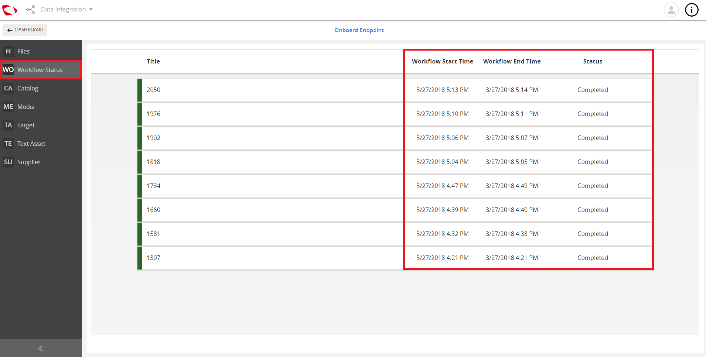

Monitor Imports¶
The Monitor Imports feature provides an import summary for every import of product data that allows corrective action to be promptly done, if necessary.
| Description: |
|
| Related topics: | |
| Application: |
|
How to do: Monitor Imports¶
- Log in (as a General User).
- Go to the Dashboard and click on the Data Integration tab.
- On the Data Integration page, find the endpoint for your onboarding. Once found, click on the dashboard entry.
- On that Onboard Endpoint page, click on the Import File button.
- Select the file to be imported from your computer. Once selected, click Open.
Note: You may check the status or the progress of the onboarding process by going to the Workflow Status.
On that page, the Start Time, End Time, and the Status are provided for review.
- Click on the Dashboard button to go back.
- View the data shown on the Dashboard.
Note: In the Endpoint Dashboard Entry, there is a drop-down menu for the details of the import process. It is set with the default value, Summary. Other options are available: Last Upload and All Uploads. Also, the violations (Red, Orange, and Yellow) can be viewed that will notify the user if there are product data to be corrected so that Data Quality can be maintained.

How to do: Maintain the Data Quality¶
If there are violations in the Endpoint Dashboard Entry, the user may correct them by following these simple steps:
- Click on the Endpoint.
- Go to Catalog that can be found on the side menu.
- Click on each product with violation and provide (or correct) the necessary data.

Last updated: Jun 20, 2018